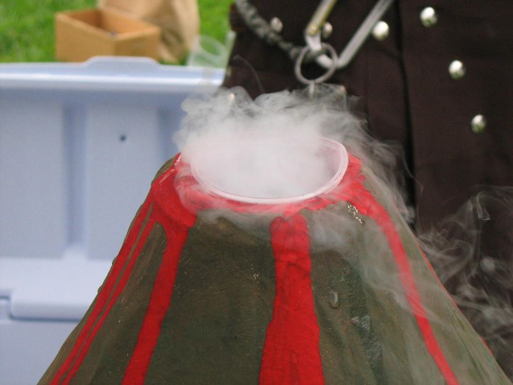

Спершу будуємо вулкан із звичайної банки чи пляшки, зафіксованій на картоні чи невеличкій дошці і обліпленій глиною чи солоним тістом. Коли конструкція буде готовою, можна її розфарбувати, додавши червоного кольору для лави. Щоб спровокувати виверження вулкану, в отвір банки (чи пляшки) насипаємо соди та ОБЕРЕЖНО наливаємо оцет (можна його підфарбувати харчовим барвником для правдоподібності).

Батарейка з лимона
Зачистіть протилежні кінці обох дротів на відстані 2–3 см. Вставте в лимон скріпку, прикрутіть до неї кінець одного з дротиків. Застроміть в лимон в 1–1,5 см від скріпки кінець другого дротика. Для цього спочатку проткніть лимон у цьому місці голкою. Візьміть два вільних кінці дротів і прикладіть до контактів лампочки.
Спирти, як і всі органічні сполуки, горять. Метанол і етанол миттєво спалахують при підпалюванні й горять синюватим, майже непомітним полум’ям із виділенням великої кількості теплоти. Відбувається реакція повного окиснення, продуктами якої є CO2 і H2O:
2CH3OH + 3O2 → 2CO2 + 4H2O.
Завдяки тому, що електронна густина зв’язку OH зміщена до атома Оксисену, атом Гідрогену набуває більшої рухливості й легше відщеплюється. Під дією активних металів, таких як натрій, калій, магній, алюміній, відбувається заміщення атома Гідрогену на атом металу. Наприклад, у пробірку з етанолом покладемо шматочки натрію. Одразу відбувається реакція з виділенням газу. Це водень. Другим продуктом реакції є натрій етилат C2H5ONa:
2C2H5OH + 2Na → 2C2H5ONa + H2.
Загальні фізичні властивості металів
Металічні елементи займають в основному ліву нижню частину Періодичної системи хімічних елементів Д, І. Менделєєва. До металічних елементів належать ті елементи, в чиїх атомах на зовнішньому електронному рівні перебуває невелике (від одного до чотирьох) число електронів, які атоми можуть легко віддавати.
Метали мають низку Загальних фізичних властивостей:
—добру електропровідність;
—добру теплопровідність;
—металічний блиск;
—добру пластичність (ковкість);
—зазвичай високу твердість;
—найчастіше перебувають у твердому агрегатному стані.
Про приналежність речовини до металів не можна судити тільки за однією ознакою. Так, деякі неметали можуть проводити електричний струм (графіт), мають металічний блиск (йод), мають пластичність (пластична сірка). Таким чином, відносити ту чи іншу просту речовину до металів або неметалів можна тільки за сукупністю ознак.